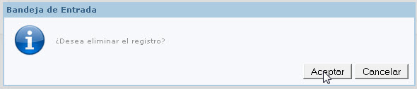

Presentación
Eduar 2.0 gestiona el sistema con diferentes perfiles según el rol de los vinculados a la entidad educativa. El Perfil Administrador tiene acceso a la mayoría de las funcionalidades del sistema a diferencia del resto de los perfiles que están mas restringidos en su accesos.
El administrador es el único usuario que puede crear nuevos perfiles, y registrar nuevos usuarios asignándole un perfil.
Puede conocer en nivel de acceso al sistema generando reportes como por ejemplo Reportes que reflejen que pagina fue el más accedido y por cual perfil.
Elementos Básicos

Camino de Navegación: Aquí muestra el camino de navegación, según el esquema de árbol, a la página que esta ubicado.
Barra de Menús: En este sector de la página se encuentra las diferentes opciones que el usuario puede elegir para acceder a determinada información que se mostrara en el contenido de la página.
La información se organiza siguiendo el principio de árbol, esto quiere decir que un menú puede tener menús hijos y menús padres.
Los menús hijos se despliegan en una serie de opciones, que al seleccionarla opción ingresara a una nueva pagina.
Cerrar sesión: hacer click en cerrar sesión para darle fin a su sesión en el sistema.
Link de Ayuda: al ingresar en este link accederá con información de un manual de usuario online.
Mensajes
Edu@r 2.0 ofrece un servicio de mensajería para que todos los usuarios cuenten con un nuevo medio para comunicarse, que les permite enviar y recibir mensajes. Cada usuario tiene una bandeja de mensajes donde se muestran todos los mensajes recibidos con su fecha de ingreso y remitente. También cuenta una bandeja de mensaje enviados donde muestra la fecha de envió y su destinatario.

Bandejas de Mensajes Recibidos y Enviados
Edu@r 2.0 cuenta con dos Bandejas de Mensajes donde se almacenas los mensajes.
En la Bandeja de Mensajes Recibidos encontramos todos los mensajes de entrada que tiene como destino nuestro usuario. Para ingresar a la bandeja de mensaje recibidos debe dirigirse a la barra de menú, posicionarse en Mensaje. Al desplegarse las opciones de mensaje, seleccione Recibidos.
En la Bandeja de Mensajes Enviados encontramos todos los mensajes de Salida que tiene como Remitente nuestro usuario. Para ingresar a la bandeja de mensaje enviados debe dirigirse a la barra de menú, posicionarse en Mensaje. Al desplegarse las opciones de mensaje, seleccione Enviados.
Al hacer click en alguna de las Bandejas se abre una nueva pantalla con una apariencia como se muestra a continuación:

En esta pantalla muestra la bandeja de entrada de los mensajes. Enlistando todos los mensajes recibidos. Por cada mensaje muestra el encabezado con los siguientes datos Remitente, Asunto, Fecha.
 Leer un mensaje: al seleccionar leer mensaje se muestra al debajo de la bandeja de Recibidos el Mensaje seleccionado. En donde muestra los datos de mensaje en el encabezado y debajo de él contenido del mensaje. Como se muestra a continuación:
Leer un mensaje: al seleccionar leer mensaje se muestra al debajo de la bandeja de Recibidos el Mensaje seleccionado. En donde muestra los datos de mensaje en el encabezado y debajo de él contenido del mensaje. Como se muestra a continuación:


Responder un mensaje: Al seleccionar responder mensaje se abre una nueva ventana con un encabezado que considera al destinatario a la usuario que le envío el mensaje y mantiene el asunto del mensaje original (este ultimo campo es editable). Y en el contenido del mensaje tiene una sesión que muestra mensaje original y otra sesión el mensaje a redactar la respuesta al mensaje original. A continuación muestra la pantalla de Responder mensaje:


Eliminación de Mensajes: Al hacer click en Eliminar aparece una ventana preguntando si desea eliminar el registro. En la misma ventana dos botones uno para aceptar la eliminación de este mensaje y otro para cancelar la eliminación.

Al hacer click en aceptar se elimina de la lista de mensajes recibidos.
Si se desea borrar más de un mensaje de la bandeja al mismo tiempo debe tildar la casilla del lado izquierdo de los mensajes que desee eliminar .Al terminar de tildar los mensajes, hacer click en el botón Eliminar Seleccionados que se encuentra en la parte superior derecha de la bandeja de recibidos.

En el encabezado de la bandeja de mensajes Recibidos observamos que en la columna de Acción aparece una casilla que nos permite tildar. En caso de tildar esta casilla automáticamente se tildan todos los mensajes de bandeja.

Nuevo Mensaje
Para redactar un Nuevo Mensaje debe dirigirse a la barra de menú, posicionarse en Mensaje. Al desplegarse las opciones de mensaje, seleccione Nuevo.
Al hacer click en Nuevo se abre una nueva ventana donde nos permite redactar un mensaje, seleccionar el o los destinatarios e ingresar un nombre del asunto del mensaje. Una ves completos los datos del mensaje hacer click en enviar.

Al seleccionar el botón enviar, se muestra una ventana informando que el mensaje fue enviado con éxito. Hacer click en aceptar.

En la ventana de Nuevo Mensaje podemos observar que existe una casilla para tildar que dice Filtrado por Curso. Al tildar esta opción se habilitan nuevos campos Curso y tipo de destinatarios. Curso : Aquí le permite seleccionar en una lista desplegable que muestra todos los cursos disponibles.
Tipo de Destinatarios: En este campo se muestra los tipos de usuarios asociados a este curso. Ejemplo: Alumnos, Tutores y Docentes.
Con la combinación de estos dos campos el sistema realizara un filtro en destinatarios y solo mostrara usuarios del curso seleccionado y que sean también del mismo tipo (Alumnos, Tutores o Docentes)

Con esta opción de filtrado, nos permite también ingresar en destinatarios un grupo de usuarios. Por ejemplo seleccionar todos los tutores de 2 año A, sin tener que ingresar uno por uno de los tutores de 2 año A.

Cuenta
En la opción cuenta del menú, usted tendrá la posibilidad de actualizar o simplemente cambiar los datos asociados a su cuenta.
Eduar 2.0 le da la posibilidad de modificar los siguientes datos para mantener actualizada su cuenta: Contraseña, Email, Pregunta secreta.
Al posicionar el cursor del mouse se despliega las opciones de la cuenta a modificar.

Como cambiar la pregunta secreta
La pregunta secreta es usada para validar que un usuario pueda cambiar su contraseña en caso de olvido. Por esto es importante que recuerde la respuesta registrada a su pregunta secreta.
Para cambiar contraseña debe dirigirse a la barra de menú posicionarse en la opción de “Mi Cuenta”. Allí se despliega las opciones del menú de “Mi Cuenta”, hacer click en “Pregunta Secreta”. Al ingresar en esta opción se habré una pantalla Modificar Pregunta Secreta, como se muestra a continuación.

Ingresar la nueva pregunta secreta, luego ingrese la respuesta correspondiente a la pregunta. Confirme el cambio de la Pregunta Secreta seleccionando el botón “Cambiar Pregunta”.
Como cambiar mi contraseña
La contraseña es una forma de autentificar qué persona esta usando el sistema. Todos los usuarios del sistema necesitan una contraseña para ingresar al sistema. Para cambiar contraseña debe dirigirse a la barra de menú posicionarse en la opción de “Cuenta”. Allí se despliega las opciones del menú de “Cuenta”, hacer click en “Contraseña”. Al ingresar en esta opción se habré una pantalla Modificar Contraseña, como se muestra a continuación.

Ingrese la nueva contraseña, recuerde que la misma debe ser alfanumérica, mas de 5 caracteres. Repita la contraseña para confirmar la misma.
Luego de completar los datos requeridos, seleccione el botón Cambiar contraseña.
Seleccione el botón cancelar en caso que desee salir, no se guardara ningún cambio al seleccionar cancelar.
Como cambiar la dirrecion de email
El email asociado a esta cuenta es usado por Edu@r2.0 para enviar notificaciones o solicitudes por cambio de contraseña, etc.
Para cambiar contraseña debe dirigirse a la barra de menú posicionarse en la opción de “Mi Cuenta”. Allí se despliega las opciones del menú de “Cuenta”, hacer click en “Email”. Al ingresar en esta opción se habré una pantalla Modificar Email, como se muestra a continuación.

Ingrese su correo electrónico, como por ejemplo xxxxx@hotmail.com. Luego confirme el cambio seleccionando el botón “Cambiar Email”. De esta manera se guardara esta dirección de email para enviar información del sistema Edu@r.